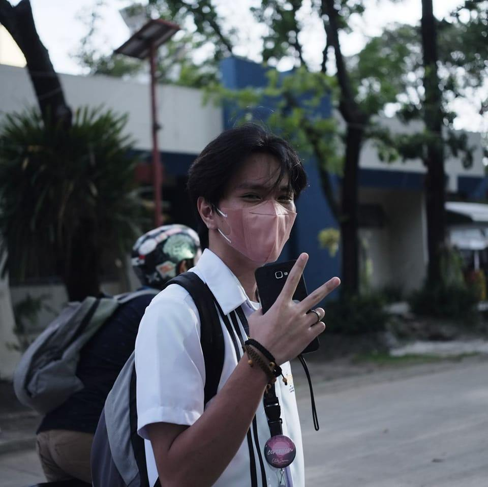

ABOUT ME
I'm Christian Kent Llanera Bilbao, you can call me "KEN". I turned 20 last July. I was born and raised in Cugman, Cagayan de Oro City. I am currently pursuing a Bachelor of Science in Information Technology at the UNIVERSITY OF SCIENCE AND TECHNOLOGY OF SOUTHERN PHILIPPINES. 2ND year college student. My dream is to become a hacker man (chariz). My dream is to become the most successful and rich man in the whole world, And my favorite food is noodles especially spicy flavor🖤.
"TOR"
WAY LAMI ANG KINABUHI PAG WALAY KARNE!